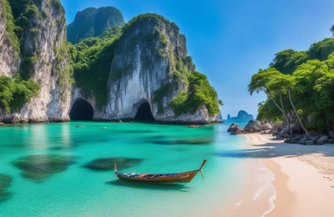
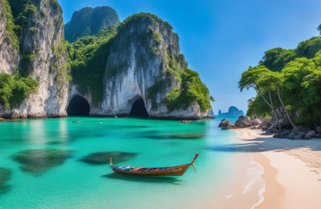

Siquijor
Uncover the charm of Siquijor, a mystical island known for its enchanting beauty and serene landscapes.
Siquijor is famous for:
- Enchanting Waterfalls: Siquijor is home to stunning waterfalls such as Cambugahay Falls. This three-tiered cascade offers a serene escape with its clear, cool waters and lush, tropical surroundings. The falls are perfect for swimming, relaxing, and taking in the natural beauty.
- Beautiful Beaches: The island boasts several beautiful beaches, with Salagdoong Beach being a highlight. Its powdery white sand and turquoise waters create an ideal setting for sunbathing, swimming, and enjoying breathtaking ocean views. Other notable beaches include Paliton Beach, known for its picturesque sunsets, and Larena Beach, offering a quieter retreat.
- Rich Folklore and Mystical Traditions: Siquijor is steeped in mysticism and rich folklore. The island is famous for its traditional healers and magical practices, with locals often performing rituals and remedies believed to have spiritual and healing powers. The annual "Healing Festival" is a testament to the island's deep-rooted mystical heritage.
 


Comments